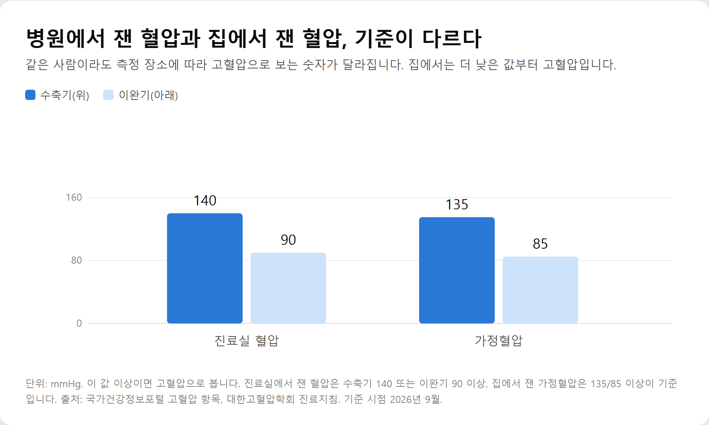
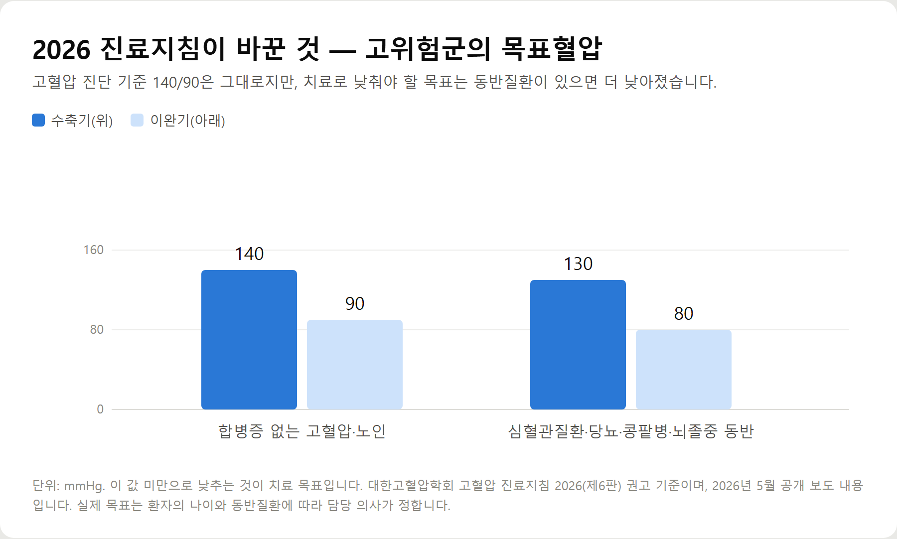
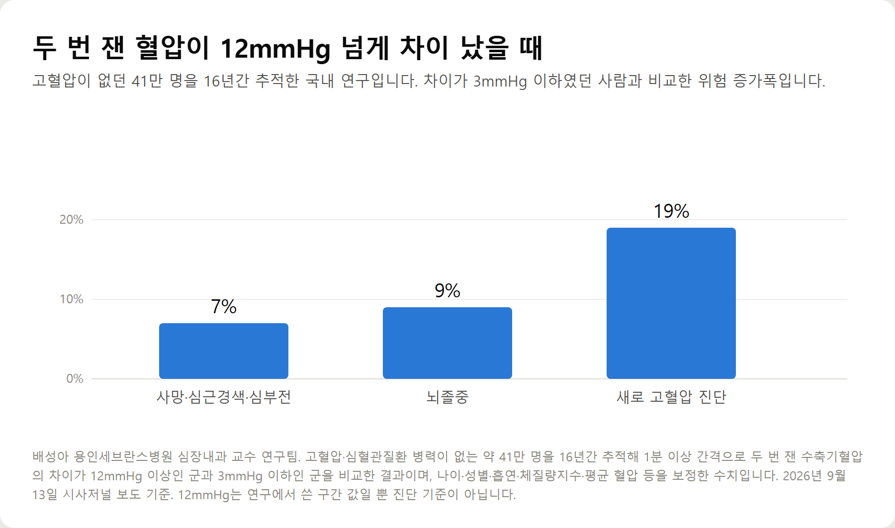
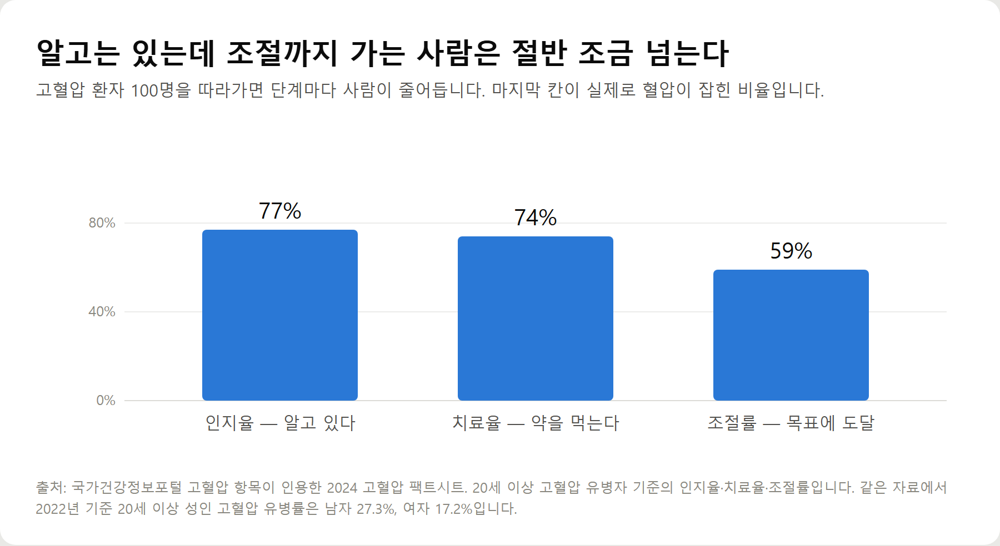

<meta charset="utf-8">
<title>고혈압 기준과 2026 진료지침, 집에서 재는 법 — 나의 투자 그리고 행복한 여행</title>
<meta name="description" content="2026 고혈압 진료지침 정리 — 진단 기준 140/90, 가정혈압 135/85, 고위험군 목표혈압 130/80, 이완기단독고혈압, 41만 명 추적 혈압 변동성 연구.">
<meta name="viewport" content="width=device-width, initial-scale=1">
<link rel="canonical" href="https://danielmoon82.github.io/moon/posts/bp-2026-09-16.html">
<link rel="preconnect" href="https://fonts.googleapis.com">
<link rel="preconnect" href="https://fonts.gstatic.com" crossorigin>
<link rel="stylesheet" href="https://fonts.googleapis.com/css2?family=Hahmlet:wght@400;600;800&family=IBM+Plex+Mono:wght@400;500&family=IBM+Plex+Sans+KR:wght@300;400;500;600&display=swap">

<style>
  :root{
    --paper:#F2EEE6;--surface:#FAF8F3;--surface-2:#E7E1D5;
    --ink:#191510;--ink-2:#4A4235;--ink-3:#7D7364;
    --line:#D6CEBF;--line-soft:#E4DDD0;--accent:#B06A15;--accent-bright:#C2761A;
    --up:#E5484D;--down:#3B82F6;
    --f-display:"Hahmlet",'Nanum Myeongjo',"Apple SD Gothic Neo",serif;
    --f-body:"IBM Plex Sans KR","Apple SD Gothic Neo","Malgun Gothic",sans-serif;
    --f-mono:"IBM Plex Mono","SFMono-Regular",Consolas,monospace;
    --pad:clamp(20px,5vw,64px);
  }
  @media (prefers-color-scheme:dark){
    :root:not([data-theme="light"]){
      --paper:#0B1120;--surface:#121A2C;--surface-2:#1A2439;
      --ink:#E9EEF7;--ink-2:#A9B5C9;--ink-3:#72809A;
      --line:#26314A;--line-soft:#1D2739;--accent:#E8A33D;--accent-bright:#F0B45C;
    }
  }
  *{box-sizing:border-box;}
  body{margin:0;background:var(--paper);color:var(--ink);font-family:var(--f-body);
    font-weight:300;font-size:1rem;line-height:1.75;-webkit-font-smoothing:antialiased;}
  a{color:inherit;}
  img{max-width:100%;height:auto;}
  .wrap{max-width:760px;margin:0 auto;padding-inline:var(--pad);}
  .nav{position:sticky;top:0;z-index:20;background:color-mix(in srgb,var(--paper) 88%,transparent);
    backdrop-filter:saturate(180%) blur(12px);border-bottom:1px solid var(--line);}
  .nav-in{display:flex;align-items:center;justify-content:space-between;height:58px;}
  .brand{font-family:var(--f-display);font-weight:600;font-size:1rem;letter-spacing:-.02em;text-decoration:none;}
  .back{font-family:var(--f-mono);font-size:.72rem;color:var(--ink-3);text-decoration:none;}
  .article{padding-block:clamp(40px,7vw,72px) clamp(56px,9vw,96px);}
  .eyebrow{font-family:var(--f-mono);font-size:.68rem;letter-spacing:.16em;text-transform:uppercase;
    color:var(--accent);margin:0 0 14px;}
  h1{font-family:var(--f-display);font-weight:800;font-size:clamp(1.6rem,4.4vw,2.3rem);
    line-height:1.3;letter-spacing:-.03em;margin:0 0 16px;}
  .byline{font-family:var(--f-mono);font-size:.72rem;color:var(--ink-3);
    padding-bottom:24px;border-bottom:1px solid var(--line);margin-bottom:32px;}
  h2{font-family:var(--f-display);font-weight:600;font-size:1.25rem;letter-spacing:-.02em;margin:42px 0 14px;}
  h3{font-family:var(--f-display);font-weight:600;font-size:1.05rem;letter-spacing:-.02em;
    margin:30px 0 10px;padding-top:14px;border-top:1px solid var(--line-soft);}
  h3 .code{font-family:var(--f-mono);font-size:.7rem;font-weight:400;color:var(--ink-3);margin-left:6px;}
  p{margin:0 0 18px;color:var(--ink-2);}
  ul.checks{margin:0 0 18px;padding-left:20px;color:var(--ink-2);}
  ul.checks li{margin-bottom:8px;font-size:.94rem;}
  table{width:100%;border-collapse:collapse;font-size:.88rem;margin-bottom:8px;}
  th{font-family:var(--f-mono);font-size:.66rem;letter-spacing:.06em;text-transform:uppercase;
    color:var(--ink-3);text-align:right;padding:8px 6px;border-bottom:1px solid var(--line);}
  th:first-child{text-align:left;}
  td{padding:10px 6px;border-bottom:1px solid var(--line-soft);color:var(--ink-2);}
  td.num{font-family:var(--f-mono);text-align:right;font-variant-numeric:tabular-nums;}
  td.up{color:var(--up);} td.down{color:var(--down);}
  .scroll{overflow-x:auto;}
  figure{margin:22px 0;}
  figure img{display:block;border-radius:3px;background:var(--surface-2);}
  figcaption{margin-top:8px;font-family:var(--f-mono);font-size:.68rem;color:var(--ink-3);text-align:center;}
  .note{margin-top:34px;padding:16px 18px;border-left:3px solid var(--accent);
    background:var(--surface);border-radius:0 3px 3px 0;}
  .note p{margin:0;font-size:.85rem;color:var(--ink-3);}
  .foot{border-top:1px solid var(--line);background:var(--surface);padding-block:30px 38px;}
  .foot p{margin:0;font-size:.8rem;color:var(--ink-3);}
</style>

<nav class="nav">
  <div class="wrap nav-in">
    <a class="brand" href="../index.html">나의 투자 그리고 행복한 여행</a>
    <a class="back" href="../index.html#stocks">← 시황으로</a>
  </div>
</nav>

<main class="wrap article">
  <p class="eyebrow">Market</p>
  <h1>2026 고혈압 진료지침 정리 — 진단 기준·목표혈압·가정혈압·혈압 변동성</h1>
  <p class="byline">건강 · 2026-09-16 기준</p>

  <p>한 줄 요약: 고혈압 진단 기준은 진료실 140/90, 가정혈압 135/85로 유지됩니다. 2026 진료지침(제6판)은 고위험군의 목표혈압을 130/80 미만으로 강화하고, 이완기단독고혈압을 신설했습니다.</p>
  <p>여기에 더해 평균 혈압만으로는 보이지 않는 '혈압 변동성' 연구를 함께 정리했습니다. 국내 41만 명 16년 추적에서 두 번 잰 수축기혈압의 차이가 12mmHg 이상인 군은 뇌졸중 위험이 약 9% 높았습니다(12mmHg는 진단 기준이 아닙니다).</p>
  <h2>핵심만 먼저</h2>
  <ul class="checks">
    <li>진단 기준 — 진료실에서 140/90 이상, 집에서 잰 가정혈압은 135/85 이상입니다</li>
    <li>목표혈압 — 합병증이 없으면 140/90 미만, 심혈관질환·당뇨병·콩팥병·뇌졸중이 있으면 130/80 미만입니다</li>
    <li>새로 생긴 분류 — 위는 정상인데 아래만 높은 이완기단독고혈압이 따로 분류됐습니다</li>
    <li>덜 알려진 신호 — 같은 자리에서 두 번 잰 혈압의 차이가 큰 것도 위험과 연관됐습니다</li>
    <li>현실 — 고혈압인 걸 아는 사람은 77%인데, 목표까지 조절된 사람은 59%입니다</li>
  </ul>
  <h2>1. 고혈압 진단 기준은 어디서 재느냐에 따라 다르다</h2>
  <p>혈압은 하루에도 오르내립니다. 그래서 같은 사람이라도 어디서 쟀는지에 따라 기준 숫자가 달라집니다.</p>
  <figure><figcaption>측정 장소별 고혈압 진단 기준 — 진료실 140/90, 가정혈압 135/85 (단위: mmHg)</figcaption></figure>
  <p>진료실에서 잰 혈압은 수축기 140 또는 이완기 90 이상이면 고혈압으로 봅니다. 둘 중 하나만 넘어도 해당됩니다.</p>
  <p>집에서 잰 가정혈압은 135/85가 기준입니다. 진료실보다 낮은 이유는 단순합니다. 병원에서는 긴장 때문에 평소보다 높게 나오는 사람이 많기 때문입니다. 반대로 집에서 재면 더 낮게 나오는 것이 보통이므로, 기준도 함께 낮춰 잡습니다.</p>
  <p>참고로 정상혈압은 수축기 120, 이완기 80 미만입니다. 130대나 이완기 80대 중반처럼 사이에 있는 값은 고혈압은 아니지만 관리 대상으로 봅니다.</p>
  <h2>2. 2026 고혈압 진료지침에서 바뀐 것</h2>
  <p>대한고혈압학회는 올해 고혈압 진료지침 2026(제6판)을 공개했습니다. 진단 기준 140/90은 그대로 두고, 치료 목표와 분류를 손봤습니다.</p>
  <figure><figcaption>2026 고혈압 진료지침 목표혈압 — 일반 140/90 미만, 고위험군 130/80 미만 (단위: mmHg)</figcaption></figure>
  <ul class="checks">
    <li>목표혈압 — 합병증이 없는 고혈압과 노인 고혈압은 기존과 같이 140/90 미만입니다. 심혈관질환·당뇨병·만성콩팥병·뇌졸중이 있는 고위험군은 130/80 미만으로 강화됐습니다</li>
    <li>이완기단독고혈압 신설 — 수축기는 정상 범위인데 이완기만 높은 경우를 따로 분류했습니다. 젊은 연령층에서 흔한 형태입니다</li>
    <li>젊은 고혈압 — 20~39세에서 조기 진단과 적극적인 치료의 중요성을 강조했고, 40세 미만 환자는 다른 원인 때문에 혈압이 오르는 이차성 고혈압인지 선별검사를 적극 고려하도록 했습니다</li>
    <li>새로운 약제 — 기존 혈압약 외에 ARNI, SGLT2 억제제, 비스테로이드성 MRA, 알도스테론합성효소억제제 등이 치료 전략에 포함됐습니다</li>
    <li>커프 없는 혈압계 — 국내외 진료지침 가운데 처음으로 커프리스 혈압계를 임상 혈압 감시 장치에 포함했습니다</li>
  </ul>
  <p>여기서 오해하기 쉬운 지점이 있습니다. 목표혈압이 130/80으로 낮아진 것은 고위험군에게 적용되는 '치료 목표'이지, 130이면 고혈압이라는 뜻이 아닙니다. 진단 기준은 여전히 140/90입니다.</p>
  <h2>3. 평균은 정상인데 위험한 경우 — 두 번 잰 혈압의 차이</h2>
  <p>보통은 혈압을 두 번 이상 재서 평균을 대표값으로 씁니다. 그런데 최근에는 평균 말고 '얼마나 오르내리는가'를 따로 보는 연구가 늘고 있습니다. 이것을 혈압 변동성이라고 합니다.</p>
  <figure><figcaption>두 번 잰 수축기혈압 차이가 12mmHg 이상인 군의 위험 증가폭 (3mmHg 이하 군 대비, 단위: %)</figcaption></figure>
  <p>배성아 용인세브란스병원 심장내과 교수 연구팀은 고혈압이나 심혈관질환 병력이 없는 약 41만 명을 16년간 추적했습니다. 1분 이상 간격을 두고 두 번 잰 수축기혈압의 차이에 따라 3mmHg 이하, 4~6, 7~11, 12mmHg 이상 네 그룹으로 나눠 비교했습니다.</p>
  <p>나이·성별·흡연·체질량지수·평균 혈압 같은 요인을 보정한 뒤에도, 12mmHg 이상 차이가 난 그룹은 3mmHg 이하 그룹보다 사망·심근경색·심부전 위험이 약 7%, 뇌졸중 위험이 약 9% 높았습니다. 새로 고혈압을 진단받을 위험은 약 19% 높았습니다.</p>
  <p>눈여겨볼 부분은 정상 혈압군에서도 같은 경향이 나타났다는 점입니다. 평균만 보면 잡히지 않는 신호가 반복 측정 과정에서 드러날 수 있다는 의미입니다.</p>
  <h2>4. 다만 12mmHg는 '기준'이 아닙니다</h2>
  <p>이 숫자를 혼자 판단 기준으로 쓰면 안 됩니다. 이 글에서 가장 중요한 부분입니다.</p>
  <p>같은 날 두세 번 잰 혈압의 차이가 몇 mmHg 이상이면 위험하다고 정한 국제적 기준은 아직 없습니다. 같은 진료에서 연이어 잰 값의 차이는 다시 재면 달라지는 경우가 많고, 연구마다 결과도 일관되지 않습니다.</p>
  <p>미국심장협회는 한 번의 진료에서 여러 차례 잰 혈압의 차이는 재현성이 낮다고 보고, 유럽고혈압학회도 2023년에 측정 방법과 평가 지표가 표준화되지 않았다는 점을 지적했습니다. 반면 여러 날에 걸쳐 병원에 갈 때마다 혈압이 크게 달라지는 '방문 간 변동성'은 심뇌혈관질환·사망 위험과 독립적으로 연관된다고 봅니다.</p>
  <p>지난해 유럽예방심장학회지에 실린 49개 연구 메타분석에서도 방문 간 수축기혈압의 표준편차가 약 6.7mmHg 이상일 때 심뇌혈관질환 위험이 약 10% 높아지는 것으로 분석됐습니다.</p>
  <p>정리하면 이렇습니다. 두 번 잰 값이 많이 다르다는 것은 '위험 판정'이 아니라 '한 번 더 확인하라는 신호'입니다.</p>
  <h2>5. 그래서 무엇을 해야 하나 — 가정혈압 재는 법</h2>
  <p>진료실에서 잰 값이 들쭉날쭉하다면 다음 단계는 생활 속 혈압을 보는 것입니다. 대한고혈압학회 진료지침이 권하는 가정혈압 측정 방법은 이렇습니다.</p>
  <ul class="checks">
    <li>언제 — 아침에는 기상 후 1시간 이내, 소변을 본 뒤, 혈압약을 먹기 전에 잽니다. 저녁에는 잠자리에 들기 전에 잽니다</li>
    <li>몇 번 — 한 번 앉을 때마다 5분 이상 안정을 취한 뒤 1~2분 간격으로 2회 잽니다. 두 값이 10mmHg 이상 차이 나면 한 번 더 잽니다</li>
    <li>무엇을 기록 — 마지막에 잰 두 번의 값을 평균해 기록합니다</li>
    <li>며칠 — 처음 진단하려는 목적이라면 외래 가기 직전 최소 5~7일은 매일 잽니다</li>
    <li>자세 — 등받이에 등을 대고, 다리를 꼬지 않고, 발바닥을 바닥에 붙이고 앉습니다</li>
    <li>커프 위치 — 팔은 책상에 편하게 올리고, 커프 중앙이 심장 높이에 오도록 맞춥니다</li>
  </ul>
  <p>측정할 때마다 값이 달라 혼란스럽다면, 대개는 자세와 시간이 매번 달랐기 때문입니다. 같은 시간, 같은 자세로 며칠치를 모으는 쪽이 한 번 정확하게 재는 것보다 낫습니다.</p>
  <h2>6. 아는 것과 조절되는 것은 다르다</h2>
  <p>혈압은 증상이 거의 없습니다. 그래서 진단을 받고도 관리가 흐지부지되는 경우가 많습니다.</p>
  <figure><figcaption>고혈압 인지율·치료율·조절률 (2024 고혈압 팩트시트 기준, 단위: %)</figcaption></figure>
  <p>국가건강정보포털이 인용한 2024 고혈압 팩트시트를 보면 인지율 77%, 치료율 74%, 조절률 59%입니다. 알고 있는 사람 중 상당수가 약을 먹고 있지만, 목표 수치까지 잡힌 사람은 열 명 중 여섯 명이 되지 않습니다.</p>
  <p>유병률도 적지 않습니다. 2022년 기준 20세 이상 성인 고혈압 유병률은 남자 27.3%, 여자 17.2%이고 나이가 많을수록 높아집니다. 40대를 넘어서면 남의 이야기가 아닙니다.</p>
  <p>혈압이 오래 높으면 뇌졸중(뇌출혈·뇌경색), 심근경색, 만성콩팥병, 고혈압성 망막증 같은 합병증 위험이 커집니다. 혈압 자체보다 이쪽이 실제로 무서운 부분입니다.</p>
  <h2>7. 이럴 때는 진료를 받아보는 게 좋습니다</h2>
  <ul class="checks">
    <li>가정혈압 평균이 135/85 이상으로 며칠째 이어질 때</li>
    <li>진료실에서 잰 값이 잴 때마다 크게 달라질 때</li>
    <li>위 숫자는 괜찮은데 아래 숫자만 계속 높을 때</li>
    <li>40세 미만인데 혈압이 높게 나올 때 — 다른 원인이 있는지 확인이 필요할 수 있습니다</li>
    <li>이미 당뇨병·콩팥병·심혈관질환이 있는데 혈압이 130/80을 넘을 때</li>
  </ul>
  <p>혈압약을 시작할지, 목표를 어디에 둘지는 나이와 동반질환에 따라 달라지므로 담당 의사와 정할 일입니다. 이 글의 숫자는 판단 기준이 아니라 대화를 시작할 재료로 쓰는 것이 맞습니다.</p>
  <h2>자주 묻는 질문</h2>
  <p>Q. 혈압이 140/90이면 바로 약을 먹어야 하나요?</p>
  <p>140/90 이상은 고혈압 진단 기준이지만, 약을 시작할지는 나이·동반질환·심혈관 위험도를 함께 보고 정합니다. 진료실에서 한 번 높게 나온 값만으로 결정하지 않고 가정혈압이나 24시간 활동혈압을 함께 확인하는 경우가 많습니다.</p>
  <p>Q. 집에서 잰 혈압 기준은 병원과 왜 다른가요?</p>
  <p>진료실에서는 긴장으로 혈압이 올라가는 경우가 많아 상대적으로 높게 측정되기 때문입니다. 그래서 가정혈압은 135/85로 기준을 더 낮게 잡습니다.</p>
  <p>Q. 두 번 잰 혈압이 많이 다르면 어떻게 하나요?</p>
  <p>두 값이 10mmHg 이상 차이 나면 한 번 더 재도록 권고합니다. 차이가 계속 크게 나타난다면 며칠간 가정혈압을 기록해 보고, 필요하면 24시간 활동혈압 검사를 상의해 보는 것이 좋습니다.</p>
  <p>Q. 위 숫자는 정상인데 아래 숫자만 높으면 괜찮은가요?</p>
  <p>2026 진료지침은 이 경우를 이완기단독고혈압으로 따로 분류했습니다. 젊은 연령층에서 흔한 형태이며 그냥 두어도 되는 상태로 보지 않습니다.</p>
  <p>Q. 스마트워치나 커프 없는 혈압계로 재도 되나요?</p>
  <p>2026 진료지침은 커프리스 혈압계를 임상 혈압 감시 장치에 처음 포함했습니다. 다만 기기마다 검증 여부가 다르므로 허가와 정확도 검증을 받은 제품인지 확인해야 합니다.</p>
  <h2>정리하면</h2>
  <p>고혈압 기준은 진료실 140/90, 집에서는 135/85입니다. 2026 진료지침에서 달라진 것은 진단 기준이 아니라 고위험군의 목표혈압이 130/80으로 낮아졌다는 점입니다.</p>
  <p>여기에 하나를 더한다면, 평균값만 보지 말라는 것입니다. 두 번 잰 값이 크게 다르다면 그날 한 번으로 안심하지 말고 며칠치 가정혈압을 모아 보는 편이 낫습니다.</p>
  <p>다음 글에서는 24시간 활동혈압 검사가 어떤 경우에 필요한지, 비용과 절차를 정리하겠습니다.</p>
  <p><b>함께 보면 좋은 글</b> — <a href="https://danielmoon82.github.io/moon/posts/tia-2026-09-14.html">팔다리 힘이 빠졌다 돌아왔다면? 뇌졸중 전조증상 대처법</a></p>
  <div class="note"><p>이 글은 공개된 진료지침과 보도·공공기관 자료를 정리한 일반 건강정보이며, 진단이나 치료를 대신하지 않습니다. 증상이나 수치가 걱정된다면 의료기관에서 상담하세요. 약의 시작·변경·중단은 반드시 담당 의사와 상의해야 합니다.</p></div>
  <p>※ 기준 시점: 2026년 9월. 진단 기준과 유병률·인지율·치료율·조절률은 국가건강정보포털 고혈압 항목과 2024 고혈압 팩트시트, 목표혈압과 분류 개정은 대한고혈압학회 고혈압 진료지침 2026(제6판) 공개 보도(2026년 5월), 혈압 변동성 연구는 2026년 9월 13일 시사저널 보도, 가정혈압 측정 방법은 대한고혈압학회 진료지침 기반 권고를 따랐습니다.</p>
</main>

<footer class="foot">
  <div class="wrap"><p>나의 투자 그리고 행복한 여행 · 투자 판단의 참고 자료일 뿐, 매수·매도를 권유하지 않습니다.</p></div>
</footer>
